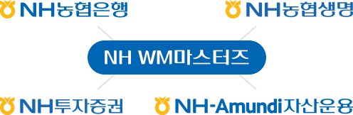

NH농협금융그룹 계열사인
NH농협은행, NH농협생명, NH투자증권,
NH-Amundi자산운용의
분야별 전문가로 구성된 자문단으로
차별화된 자산관리를 제공하고 있습니다.

투자전략 및 포트폴리오 제공
국내·외 주식, 채권, 펀드,
ELS/DLS 등 자산진단
매입·매각 관련 자문
종합과세·연금·상속·증여·
양도소득세 등
종합솔루션 제공
라이프주기별 맞춤 컨설팅 제공
NH농협금융그룹 계열사의 자문이 필요한 경우,
NH All100자문센터 위원이 NH WM마스터즈와 협업 후 상담
자세한 사항은 NH농협은행 홈페이지에서 확인하실 수 있습니다.